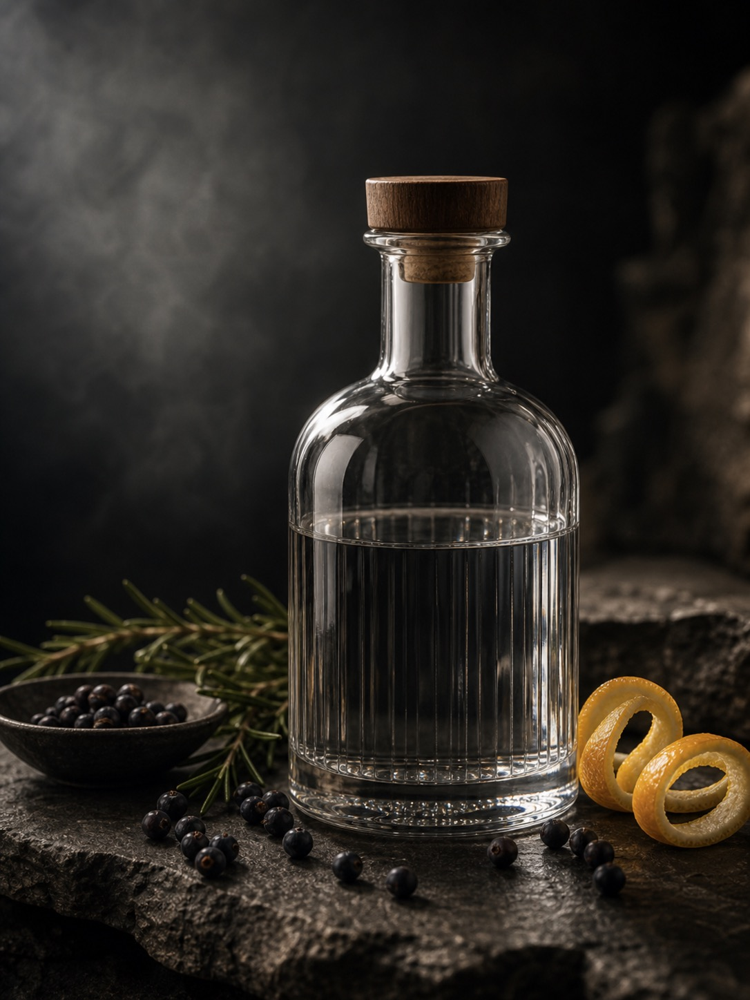

BC Botanical Gin · Small-batch
Dobre means good.
We take that seriously.
gindobre.com is available for acquisition. The page below illustrates one direction: a small-batch botanical gin distilled in British Columbia from foraged and estate-grown botanicals.
The botanicals
Eight foraged ingredients. One distillation. No shortcuts.
Juniper
Wild-harvested from the interior BC plateau. The spine of the spirit.
Spruce Tips
Gathered on Vancouver Island in the two-week May window. Citrus and pine.
Labrador Tea
A boreal forest staple used by First Nations. Floral, herbal, medicinal.
Rose Hip
Coastal BC harvest in October. Tart, fruity, high in tannin structure.
Coriander
Estate-grown in the Okanagan. The bridge between the foraged and the familiar.
Angelica Root
Wild-dug in the spring. Earthy, slightly bitter backbone that carries the spirit.
Birch Bark
Paper birch from northern BC. Wintergreen, clean, a signature Dobre note.
Black Pepper
The only non-BC ingredient. The heat required for the finish.

How it's made
One copper pot still. One batch per month. 600 bottles.
Every botanical is measured by hand, macerated for 24 hours in neutral grain spirit, then distilled in a single pass through a 300-litre copper pot still. There is no blending, no flavour correction, no second chance.
Gin Dobre produces 600 bottles per month. When they are gone, they are gone. The next batch begins at the next new moon. This is not a marketing calendar. It is the only distillation schedule our still allows.
Who it's for
For the operator ready to own the premium craft gin category in Canada.
Craft spirits founders
The Canadian craft gin market has grown 34% in four years. An exact-match .com in a category still dominated by generic names is the kind of asset that anchors a brand long-term.
Established distilleries
Distilleries adding a premium gin label need consumer-facing brand infrastructure. gindobre.com is ready to deploy and SEO-clean with no prior history.
Spirits importers and agents
Agents bringing a European craft gin to the Canadian market benefit from a domain that signals local identity without sacrificing premium positioning.
The asset is the address
Acquire gindobre.com.
Send a note. Offers, partnerships, and serious enquiries are read by the owner directly. Brokers welcome. Confidentiality assumed.